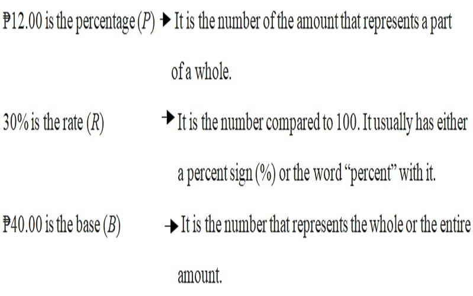
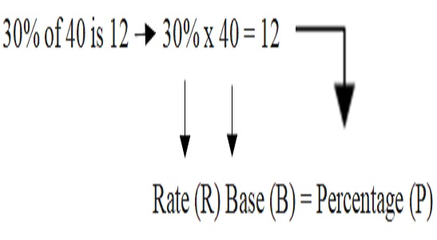
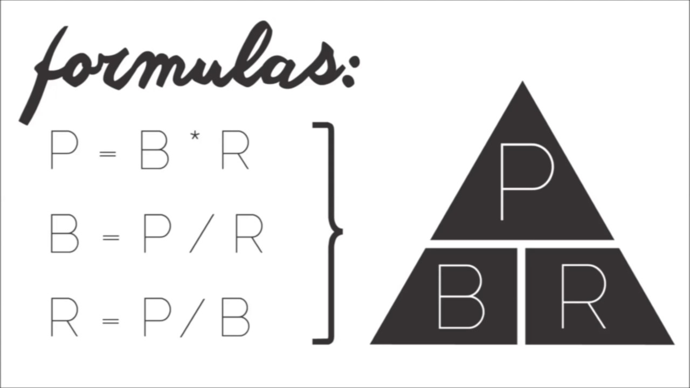
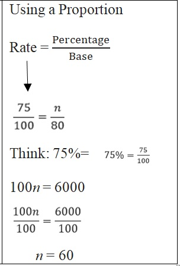

ENGAGE
Mark’s daily allowance is ₱40.00. He spends ₱12.00 for snacks. This is 30% of his daily allowance.
Identify which information represents the percentage, the rate, and the base.
EXPLORE
In the situation given above, we can say that: 30% of ₱40.00 is ₱12.00. In this case, we can now easily identify which is the percentage, the rate, or the base. We let P be the percentage, R be the rate, and B be the base.
EXPLAIN
The situation above can also be described as:
Based on this, we can now generate formula for finding the percentage (P), the rate, (R), and the base (B).
P = Percentage; R = Rate; B=Base
The Techan’s triangle above can help you remember the three formulas. To find the percentage (P) cover P; since R and B are next to each other, it means multiplication. To find the base (B), cover the B; since P is over R, it means division. And to find rate (R), cover R; since P is over B, it means division.
Let us study the following examples.
Finding the percentage (P)
Example 1 Find 75% of 80.
Solution:
We can solve the problem in two ways.

Answer: 75% of 80 is 60.
Application and Problem Solving
There are 360 pupils in a school. If 15% of them are Boy Scouts, how many Boy Scouts does the school have?